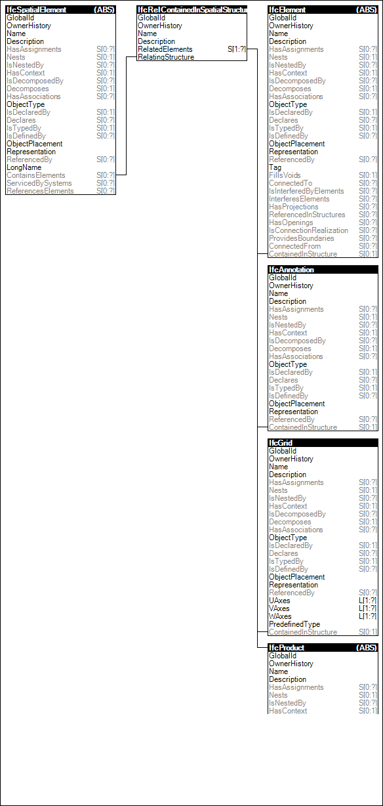

Link to this page
Link to this pageThe Spatial Container concept defines a spatial element as being the spatial container for physical elements, or other elements being directly related to the spatial container, such as annotations or grids.
EXAMPLE A building story is a logical spatial container of building elements, distribution elements, or furnishing elements.
The Spatial Container concept is realized by using the IfcRelContainedInSpatialStructure objectified relationship between subtypes of IfcSpatialElement and the elements contained. The inverse relationship ContainsElements at the subtypes of IfcSpatialElement refers to the contained physical elements.
Figure 78 illustrates an instance diagram.
 |
Figure 78 — Spatial Container |